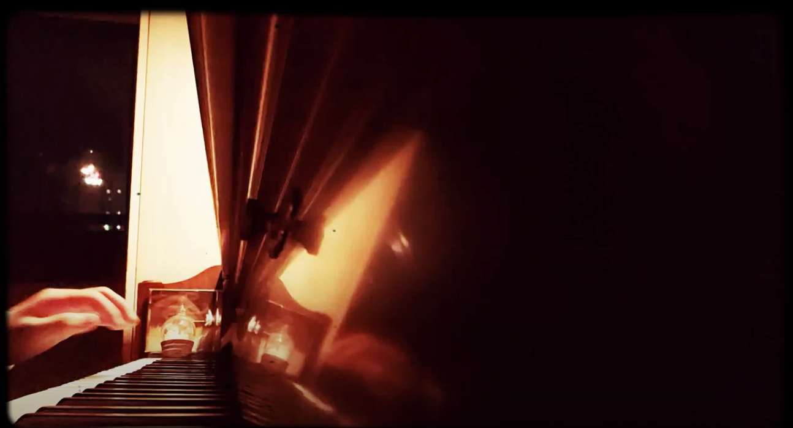

sereno - 스물다섯 번째 밤의 멜로디
하나, 둘, 셋, 넷, 다섯
하늘에서 눈이 내리고 있어요
여섯, 일곱, 여덟, 아홉, 열
아이들은 눈사람을 만들기 시작해요
열하나, 열둘, 열셋, 열넷, 열다섯
어른들도 모두들 거리로 나오고 있어요
열여섯, 열일곱, 열여덟, 열아홉, 스물
거리의 조명들이 하나둘 켜지기 시작해요
스물하나, 스물둘, 스물셋, 스물넷, 스물다섯
모두 함께 노래를 부르기 시작해요
이 깊고 깊은 밤의 노래를
이 기쁜 성탄의 노래를
- Sereno -